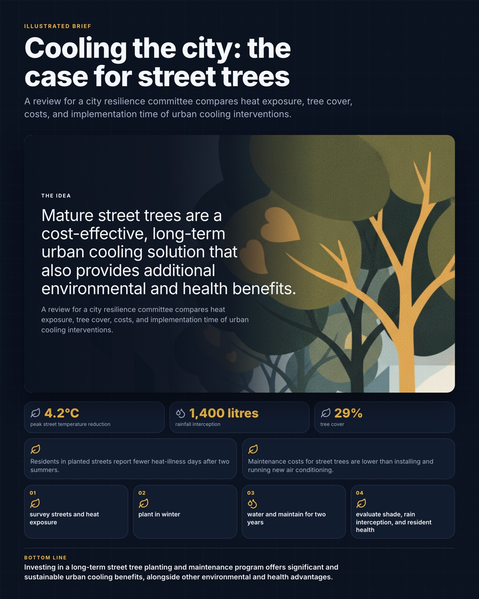

Designed, not filled
A bounded catalog of 25 layouts and 6 style packs. The model chooses content and composition; Python controls the grid and typography.
Local-first · bring your own model
Turn a document, report, or URL into a single page with real charts, diagrams, and exact text. No account. No telemetry. Your model, your machine.
macOS and Windows builds are unsigned. Check the release notes for first-launch guidance.

A bounded catalog of 25 layouts and 6 style packs. The model chooses content and composition; Python controls the grid and typography.
Bars, donuts, stacked shares, trends, dashboards, hierarchy trees, and measured SVGs. Numbers stay real.
PNG, PDF, or editable HTML. Typography is rendered by code, not baked into an image prompt.
Ollama locally, or Gemini, OpenAI-compatible, and Anthropic with your own key. Nothing is proxied through a Tavola account.
Optional text-free hero art, generated by the model you configure and composited under exact native type.
No CDN, no telemetry, no hosted workspace. The desktop app keeps its runtime and outputs on your machine.